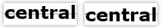

- SVG 允许您像图形一样修改文本并应用渐变、图案、剪切路径、蒙版或过滤器
- 默认情况下，text 使用以下默认属性：
颜色：黑色
字体大小：16px
不换行
- x y：基线的起点 - the starting point of the text baseline；设置文本的起点
- dx dy：用于指定每个字符或子字符串<tspan>相对于其父元素的额外偏移量，用来微调文本的位置，特别是在处理多行文本或特定字符的对齐时非常有用
- 结合水平对齐属性 text-anchor和垂直对齐属性 dominant-baseline，更加精准控制文本
- SVG尺寸：300*60
- 默认
<text>遇见最好的自己</text>
默认
- 偏移
<text x="16" y="16">遇见最好的自己</text>
x="16" y="16"
- 文本锚点 text anchor
- 控制水平对齐：文本内容以指定的 x 坐标为中心对齐
相对于中心点 - relative to a given point
包括：start | middle | end
- end
<text text-anchor="end">遇见最好的自己</text>
text-anchor="end"
- middle
<text text-anchor="middle">遇见最好的自己</text>
text-anchor="middle"
- 基线 dominant-baseline
- 控制垂直对齐：决定文本的哪条线作为参考线（基线），来对齐到 y 坐标
- 它决定了文本的顶部、底部或中间如何与 y 值对齐
- 文本相对于基线的垂直对齐方式
- baseline：文本的底部边缘所在的水平线
- middle：将文本的中部对齐到指定的基线位置。适用于将文本的中部与某个容器或行的中部对齐
- central：将文本的中心对齐到指定的基线位置。适用于将文本整体居中于容器或行的高度内
- 包括：auto | hanging | ideographic | alphabetic | middle | central
- 对英文字体有影响
- 在中文排版中，central 通常更自然，因为汉字没有明显的“基线”概念，视觉中心更重要

middle vs central
- central
y = 0
<text dominant-baseline="central">遇见最好的自己</text>
dominant-baseline="central"
- middle
y = 0
<text dominant-baseline="middle">遇见最好的自己</text>
dominant-baseline="middle"
- 子文本 <tspan>
- <text>的子文本 subtext，便于精准控制
<text x="16" y="16">
<tspan>Hi,</tspan>
<tspan>glpla；无偏移</tspan>
</text>
<text x="16" y="16">
<tspan>Hi,</tspan>
<tspan dx="16" dy="16">glpla；相对父元素偏移</tspan>
</text>
<svg class="svg-basic txt">
<text x="150" y="30" dominant-baseline="middle" text-anchor="middle">
<tspan>Hi,</tspan>
<tspan font-size="18">glpla</tspan>
<tspan font-size="20">小字体</tspan>
<tspan font-size="24">大字体</tspan>
</text>
</svg>
<svg class="svg-basic txt">
<text x="150" y="30" dominant-baseline="central" text-anchor="middle">
<tspan>Hi,</tspan>
<tspan font-size="18">glpla</tspan>
<tspan font-size="20">小字体</tspan>
<tspan font-size="24">大字体</tspan>
</text>
</svg>
综合实例 Demo
[] 居中
<text x="150" y="30"
text-anchor="middle"
dominant-baseline="central">遇见最好的自己</text>
居中
[] 静态描边文字
- SVG容器为320*120，定位点为160*60；当水平居中 middle 垂直居中 central 时，文字位于容器正中间
- 在画布外，增加一个容器放置背景图片
- 增加文字阴影 text-shadow
- 请使用 自定义字体 和 滤镜 Filter 优化案例
[] 动态描边文字
- 借助 帧动画 @keyframes，改变 stroke-dashoffset 实现动态描边
.dynamic {
stroke-dasharray: 1000;
stroke-dashoffset: 1000;
animation: draw 5s ease-in-out infinite;
}
@keyframes draw {
100% {
stroke-dashoffset: 0;
}
}
[] 手机清理空间效果图
- 绘制一个 fill 为黑灰色、带轮廓 stroke 的圆 circle
- 再绘制一个无填充、有轮廓 stroke 颜色和宽度，并指定一定占空比的同心圆
- 再绘制一个无填充、有轮廓stroke颜色和宽度、更大占空比的同心圆，并指定偏移 offset
- 添加3个 text，以中心为参考，分别是水平 end 对齐、水平 start 对齐和垂直 hanging 对齐
手机清理
[] 动态颜色文字
- 使用 JavaScript 生成随机颜色
- 使用 CSS 变量修改颜色
<text fill="var(--main-color)">遇见最好的自己</text>
- 矩形 <rect>、文字 <text>、对齐
[] 绘制弧线
A rx ry x-axis-rotation large-arc-flag sweep-flag x y
rx：轴半径
ry：轴半径
弧形的旋转角度：x-axis-rotation
large-arc-flag：决定弧线是大于还是小于 180 度，0 表示小角度弧，1 表示大角度弧
sweep-flag：表示弧线的方向，0 表示从起点到终点沿逆时针画弧，1 表示从起点到终点沿顺时针画弧
sweep-flag：弧线方向
x y：弧形的终点
<svg width="400" height="200">
<path d="M 0 -200 A 3 1 0 1 0 400 0 V 200 A 3 1 0 1 0 0 300 Z" fill="#f40" />
</svg>
[] 验证码
Summary & Homework
- Summary
- SVG 的各种使用
- Homework
- 分别完成以上案例
- 利用 SVG 优化个人网站